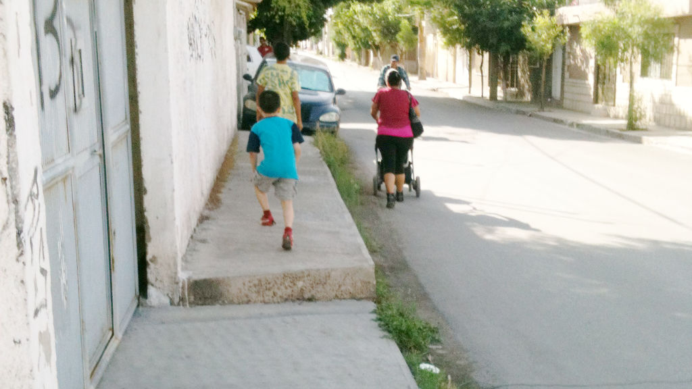
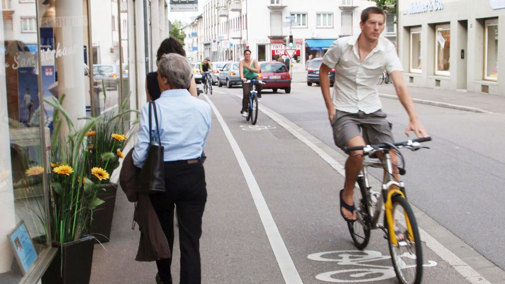
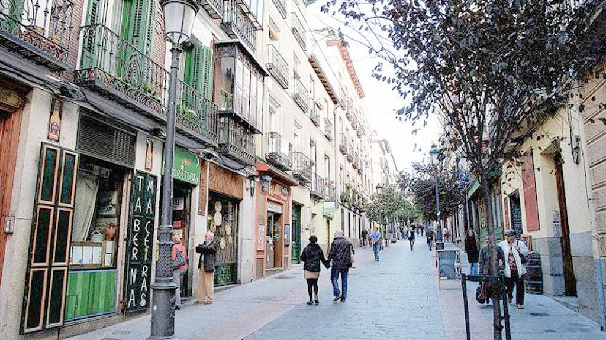

Caminar es la forma más amigable de movernos, no sólo es una acción física sino contemplativa que nos permite la introspección. Anteriormente, las ciudades estaban más pensadas para los paseantes o transeúntes, hasta las compras podían hacerse a pie, los mercados populares eran más visitados y el tráfico vehicular era mucho menor.
Al paso del tiempo, tanto en Torreón como en una buena parte de las metrópolis mexicanas, el crecimiento de las ciudades está pensado en los automóviles: el incremento de periféricos, cruceros inteligentes, sistemas viales si bien hacen más cómodo y más rápido el tránsito vehicular, han dejado del lado al peatón y al ciclista.
Recientemente se llevó a cabo en la Ciudad de México el foro “Ciudad Peatón”, como parte del Laboratorio para la Ciudad de México, un lugar donde se generan ideas para el futuro de la más grande metrópoli mexicana. Se contó con la visita de Jeff Speck, urbanista y arquitecto, autor de varios libros, entre ellos “Walkable City” (Ciudad Caminable), quien dejó claro que...
“un lugar agradable y atractivo es un lugar lleno de gente; es por ello que un lugar ideal es caminable, compacto, accesible y diverso”.
En el caso de Torreón, sólo la mitad de las manzanas cuenta con una infraestructura completa de calles (pavimento y banquetas), ya que los vehículos y los peatones pueden circular aparentemente sin contratiempos.
De acuerdo con indicadores recogidos en el Plan Estratégico Metropolitano (documento en elaboración), 5,249 manzanas cuentan con todas sus vialidades pavimentadas y con banquetas y sólo 577 manzanas no cuentan con pavimento ni banqueta en sus vialidades. Pero al observar la correlación entre la existencia de pavimento y banquetas, se detecta un patrón que se repite en todas las ciudades laguneras: la accesibilidad a las banquetas es más limitada que el acceso a vialidades pavimentadas.
¿Cómo hemos llegado a esta situación? ¿Cómo es que nuestras ciudades han menospreciado tanto al peatón? Se trata de una responsabilidad que debemos compartir todos, no sólo autoridades sino también ciudadanos y automovilistas. ¿Cuántas veces no vemos espacios como banquetas invadidos por el automóvil? ¿Por qué permitimos los ciudadanos que algunos dueños de predios se apropien de las banquetas para ampliar sus estacionamientos o terrenos?

Hay algo desolador cuando a una madre paseando a su hijo en carriola se le termina la calle, cuando los menores de edad no pueden andar seguros en las banquetas porque incluso ahí, la velocidad del automóvil puede ponerlos en peligro. Cuando en varios kilómetros a la redonda de nuestra casa o lugar de trabajo no existe ninguna calle por donde puedan transitar con seguridad los ciclistas, o peor aún, cuando los espacios para discapacitados están deteriorados o son invadidos por automóviles.
Del Foro Ciudad Peatón de México D.F. realizado en 2014, se desprendió la siguiente idea: “La caminabilidad es hacer una ciudad amable para el peatón, es construir una ciudad o lugar en donde la gente quiera vivir y que este invite a la permanecer allí y su descubrimiento. Caminar, además de la acción de trasladarse de un punto a otro comprende un acto contemplativo, de observación y reconocimiento que muchas veces no nos permitimos tener por el ritmo cotidiano al que estamos acostumbrados.” http://labplc.mx/caminar-jeff-speck/
El crecimiento acelerado de Torreón plantea el siguiente escenario: los vehículos motorizados para el 2030 se estarían duplicando, en Torreón pasaría de 226 vehículos por cada mil habitantes, a 501 vehículos por cada mil, es decir, 1 de cada 2 torreonenses usaría un coche.
Mientras el crecimiento del parque vehicular no vaya de la mano con la creación de proyectos en beneficio del peatón, nunca llegaremos al modelo de una ciudad sustentable, amigable, generadora de espacios de convivencia públicos.
La experiencia del foro del Laboratorio para la Ciudad de México, ha dado como respuesta la necesidad de contar con calles “que generen comunidad”:
Para que las calles dejen de ser un sitio de tránsito y se conviertan en un destino por sí mismas, es necesario que el diseño urbano atienda determinadas pautas en la construcción y rediseño de las vías públicas. La idea de que el concepto “espacio público” sólo se refiere a parques y jardines ha provocado que las calles de las grandes ciudades ya no sean lugares propicios para el diálogo y el intercambio de experiencias.

Según este foro, cuyos textos están disponibles en Internet, la supremacía de los automóviles, la falta de seguridad para los peatones y el planeamiento urbano deficiente le han restado a las calles su carácter de “plaza pública”. Por ello, una reflexión sobre estas carencias es útil para identificar los componentes que son deseables y positivos para las arterias de una ciudad.
Una organización que a través de la planificación y la educación, ayuda a crear espacios públicos a beneficio de las comunidades “Project for Public Spaces (PPS)” propone una lista de 10 cualidades que una calle debe tener para funcionar de manera adecuada como espacio público de interacción:
- Atracciones
- Identidad e Imagen
- Usos activos
- Equipamiento
- Dirección
- Estrategias por temporadas
- Diversidad de usuarios
- Tráfico y caminabilidad
- Mezcla de usos de suelo
- Preservación del barrio
